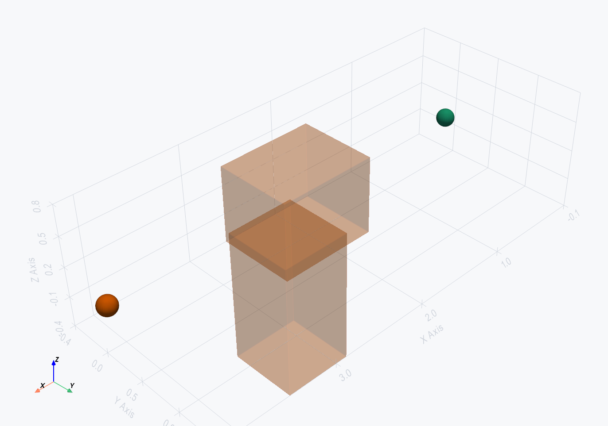
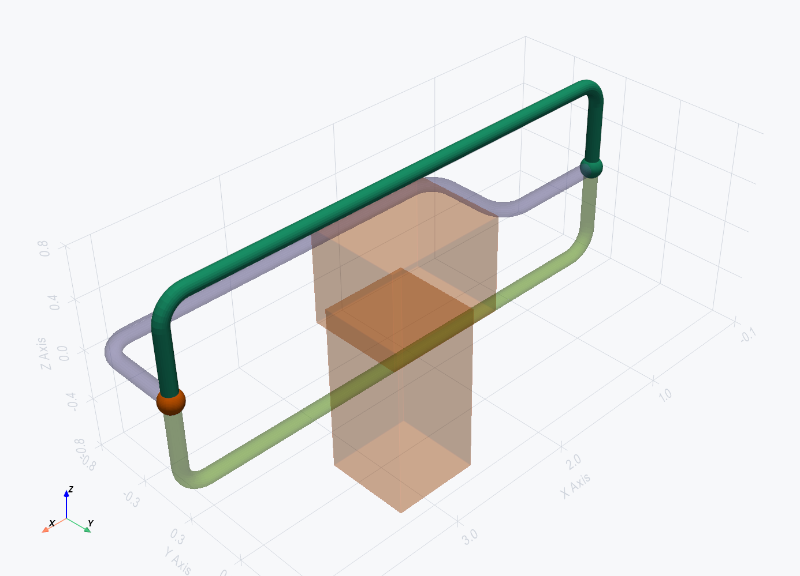

Markdown and JSON report
from tuba.routing.report import write_route_report
write_route_report(result, "routing_reports/P-100", model=model)Autorouting
Autorouting is a candidate-generation and review workflow. It can create pipe centerline alternatives, apply a selected candidate to a model, export Code_Aster studies, and write route reports. It becomes engineering evidence only when the selected study is solved with Code_Aster and the generated result artifacts are imported.


| Concept | Public API | Implementation |
|---|---|---|
| Request data | RouteEndpoint, PipeRouteRequest, RoutingConstraints, RoutingCostWeights |
tuba.routing.types |
| Grid construction | RoutingGridSpec, RoutingSpace, RoutingZone |
tuba.routing.grid, tuba.routing.spaces |
| Single-pipe routing | GridRouter(...).route(model, request) |
tuba.routing.astar |
| Cost model | RouteCostModel, score_candidate |
tuba.routing.cost_model, tuba.routing.cost |
| Model mutation | build_candidate_patch, apply_candidate_to_model |
tuba.routing.adapter |
| Expansion candidates | ExpansionAwareRouter, ExpansionLoopGenerator, ExpansionLoopSpec |
tuba.routing.hybrid, tuba.routing.expansion |
| Network routing | NetworkRouter, NetworkRouteRequest |
tuba.routing.network |
| Solver-loop review | AutoroutingAgent, SolverLoopConfig, SolverLoopScorer |
tuba.routing.agent, tuba.routing.solver_loop |
| Reports and review | write_route_report, show_route_scene, build_visualization_scene(..., route_results=[...]) |
tuba.routing.report, tuba.routing.visualization, tuba.visualization |
A route request combines endpoint geometry, pipe definition, clearance requirements, cost preferences, optional routing spaces, optional thermal requirements, and optional solver acceptance criteria. Endpoints may include a departure or approach direction and a minimum straight length.
from tuba import Model
from tuba.routing import GridRouter
from tuba.routing.types import (
PipeRouteRequest,
RouteEndpoint,
RoutingConstraints,
RoutingCostWeights,
RoutingGridSpec,
)
model = Model("RoutingDemo")
model.add_material("steel", E=210e9, nu=0.3, rho=7850.0, alpha=12e-6)
model.add_pipe_section("DN100", OD=0.1143, WT=0.00602)
model.add_obstacle(
id="equipment_box",
type="cuboid",
min_point=(1.5, -0.4, -0.4),
max_point=(2.5, 0.4, 0.4),
)
request = PipeRouteRequest(
id="P-100",
start=RouteEndpoint("PumpNozzle", (0.0, 0.0, 0.0), direction=(1.0, 0.0, 0.0), min_straight=0.5),
goal=RouteEndpoint("RackTieIn", (4.0, 0.0, 0.0), direction=(0.0, -1.0, 0.0)),
section="DN100",
material="steel",
constraints=RoutingConstraints(clearance=0.10, insulation_thickness=0.03, min_bend_radius=0.20),
costs=RoutingCostWeights(length=1.0, bend=5.0, vertical=2.0, support_span=0.5),
)
RoutingGrid.from_model computes a bounded 3D occupancy
grid from the endpoints, model nodes, obstacles, and existing pipe
elements. Obstacles and existing pipes are inflated by the route
envelope: pipe radius, insulation thickness, and requested clearance.
| Input | Effect on grid |
|---|---|
RoutingGridSpec.cell_size |
Resolution of the search. Smaller cells are more precise and more expensive. |
bounds_min, bounds_max, margin |
Design volume. Explicit bounds must contain both endpoints. |
allow_diagonal |
Switches from orthogonal neighbors to 26-neighbor movement. |
avoid_obstacles |
Marks cuboid, cylinder, and bounded mesh obstacles as blocked cells. |
avoid_existing_pipes |
Marks existing model pipes as blocked envelopes. |
RoutingSpace |
Applies allowed, preferred, forbidden, and reserved zones. |
max_cells |
Hard guard against accidentally searching an enormous volume. |
GridRouter performs deterministic A* search over the grid.
It respects endpoint direction and minimum straight constraints,
simplifies the raw grid path into route points, validates bend
geometry, and scores each candidate. With candidate_count
above one, it encourages alternatives by blocking interior cells from
previously found paths.
router = GridRouter(
RoutingGridSpec(cell_size=0.25, margin=1.0),
candidate_count=3,
)
result = router.route(model, request)
for index, candidate in enumerate(result.candidates):
print(index, candidate.is_valid, candidate.cost, candidate.cost_breakdown)
selected = result.selectedclearance,
rack_preference, and direction_change weight
fields are typed extension points unless a local cost function uses
them.
A candidate is only points and segments until it is applied. The
adapter converts it to a model patch, creates straight pipe elements,
inserts explicit bend geometry, and can add simple rest supports at a
spacing. Route bends require a bend radius through
request.constraints.min_bend_radius or per-segment
metadata.
from tuba.routing.adapter import apply_candidate_to_model
created_element_ids = apply_candidate_to_model(
model,
selected,
request,
add_supports=True,
support_spacing=2.0,
)
AutoroutingAgent runs the router, scores the candidates
through the solver-loop scorer, optionally mutates the model, and
writes route_report.md plus route_result.json.
from tuba.routing import AutoroutingAgent, GridRouter
from tuba.routing.solver_loop import SolverLoopConfig
run = AutoroutingAgent(
router=GridRouter(RoutingGridSpec(cell_size=0.25, margin=1.0), candidate_count=3),
solver_config=SolverLoopConfig(
run_solver=False,
export_study=True,
max_solver_candidates=2,
work_root="routing_reports/studies",
load_case="Hot",
),
output_root="routing_reports",
).route_pipe(model, request, apply=True, add_supports=True, support_spacing=2.0)
print(run.report_path)
print(run.created_element_ids)run_solver=False and export_study=True,
the agent writes Code_Aster handoff files for candidate review. That
is not a completed engineering evaluation. With
run_solver=True, Code_Aster must be available and the
resulting artifacts are parsed before solver-backed candidate metadata
can be trusted.
Expansion-aware routing is a hybrid. It keeps the normal grid
candidates, adds generated loop candidates, scores all candidates, and
selects the lowest-cost valid option.
The current generator emits U-loop candidates only.
z_loop and offset_loop are typed future
families, not current generator output.
from tuba.routing import (
ExpansionAwareRouter,
ExpansionLoopGenerator,
ExpansionLoopSpec,
GridRouter,
SolverAcceptanceCriteria,
ThermalRouteRequirement,
)
hot_request = PipeRouteRequest(
id="HOT-EXP-100",
start=RouteEndpoint("PumpDischarge", (0.0, 0.0, 0.0), direction=(1.0, 0.0, 0.0)),
goal=RouteEndpoint("RackTieIn", (8.0, 0.0, 0.0), direction=(1.0, 0.0, 0.0)),
section="DN100",
material="steel",
constraints=RoutingConstraints(clearance=0.10, insulation_thickness=0.05, min_bend_radius=0.25),
thermal_requirements=ThermalRouteRequirement(
design_temperature_c=180.0,
reference_temperature_c=20.0,
line_length_m=8.0,
thermal_expansion_coefficient=12e-6,
),
solver_acceptance=SolverAcceptanceCriteria.hot_line_defaults(),
)
router = ExpansionAwareRouter(
base_router=GridRouter(RoutingGridSpec(cell_size=0.5, margin=1.5), candidate_count=1),
loop_generator=ExpansionLoopGenerator((
ExpansionLoopSpec(family="u_loop", width_m=2.0, depth_m=0.8, plane="xy", min_clearance_m=0.15),
)),
)| Expansion data | Used for |
|---|---|
ThermalRouteRequirement |
Captures design/reference temperature, effective line length, coefficient, and metadata. |
ExpansionLoopSpec |
Defines generated U-loop width, depth, plane, and additional loop clearance. |
reserved_envelope |
Stored on loop candidates so network routing and reviews can protect loop space. |
SolverAcceptanceCriteria |
Currently enforced for expansion ratio, sustained ratio, and maximum anchor reaction when real solver results exist. |
NetworkRouter routes requests in a deterministic order and
applies accepted earlier candidates to a working copy so later pipes
see them as existing obstacles. It then checks centerline conflicts
and reserved-envelope intrusion, with bounded repair attempts. This is
prioritized routing, not a global optimizer.
from tuba.routing import NetworkRouter
from tuba.routing.types import NetworkRouteRequest
network_result = NetworkRouter(
grid_spec=RoutingGridSpec(cell_size=0.5, margin=2.0)
).route_network(
model,
NetworkRouteRequest(
id="rack-lines",
pipe_requests=[request, hot_request],
order_strategy="large_bore_first",
max_reroute_attempts=20,
),
)
Supported order strategies are given,
large_bore_first, critical_first, and
least_flexible_first.
from tuba.routing.report import write_route_report
write_route_report(result, "routing_reports/P-100", model=model)from tuba.routing.visualization import show_route_scene
show_route_scene(model, request=request, result=result)from tuba.visualization import build_visualization_scene, write_scene_bundle
scene = build_visualization_scene(model, route_results=[result])
write_scene_bundle(scene, "routing_reports/P-100/review_scene")solver_config = SolverLoopConfig(run_solver=True, export_study=True, load_case="Hot")
Candidates are ranked by a transparent additive cost. The total is the
sum of independent cost terms; each term is quantity × unit_cost,
so you can read exactly why one route beat another. The lowest-cost valid
candidate becomes result.selected.
| Cost term | Quantity measured | Unit |
|---|---|---|
length | Total routed centerline length. | m |
bends | Number of bends on the route. | count |
vertical | Vertical run that needs extra support. | m |
support_span | Largest unsupported span (drives support count). | m |
supports | Support count implied by the route. | count |
insulation | Insulated length and weight, when specified. | m / kg |
Each candidate carries a cost_breakdown whose
.terms map exposes every term's quantity, unit, unit cost,
and total; .total is their sum. The full field reference for
RouteCostModel, PipeRouteResult, and
PipeRouteCandidate is on the
Commands page under Autorouting.
| Symptom | Likely cause | Fix |
|---|---|---|
No route found |
Inflated obstacles, tight clearance, or insufficient design volume. | Inspect obstacle envelopes, increase margin/bounds, increase cell size for exploration, or revise clearance. |
outside routing grid bounds |
Explicit bounds do not contain an endpoint. | Expand bounds_min and bounds_max or remove explicit bounds. |
exceeding max_cells |
The grid is too fine for the selected volume. | Use a larger cell_size, smaller bounds, or a deliberate higher max_cells. |
Route bends require an explicit bend radius |
A candidate with a turn is being applied or visualized without bend-radius data. | Set RoutingConstraints(min_bend_radius=...) or provide a segment bend radius. |
Solver loop failed |
Code_Aster runtime or candidate study execution failed. | Read study.mess, runtime stdout/stderr logs, and rerun code_aster_doctor --check. |
.comm, .mail, and .export files are handoff artifacts, not completed solver results.